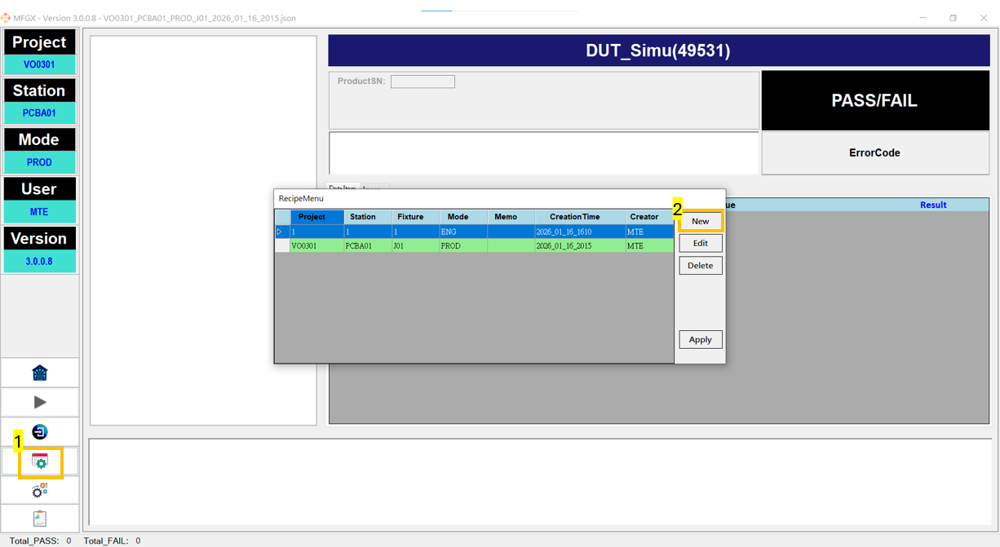
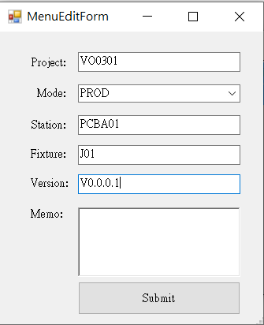

Creating Scripts and Setting Environment Variables¶
1. Create a new script (initial parameters)¶
When you click New in Configure (recipe management) to create a new test script flow, the system first opens the Initial Parameter Editor. This is used to define the basic identity of the flow (Project / Mode / Station / Fixture / Version, etc.).

2. Field description¶
| Field | Description | Example |
|---|---|---|
| Project | Project name, usually mapped to the product project | VO0301 |
| Mode | Script usage mode | PROD / ENG / GRR |
| Station | Station (test station) | PCBA01 |
| Fixture | Fixture ID (use J01/J02... for multiple fixtures in the same station) | J01 |
| Version | Script version for identifying updates | V0.0.0.1 |
| Memo | Notes (optional) | e.g., precautions, change points |

3. Versioning and variable usage (% variables)¶
After the script flow is created, during execution the system automatically builds a set of variables that can be referenced inside the workflow based on flow settings and environment variables. These variables are commonly used for:
- file names
- paths
- communication commands
- logging contents
Common syntax: %VariableName%, for example:
%ProjectName%%StationName%%FixtureName%%Version%%ProductSN%